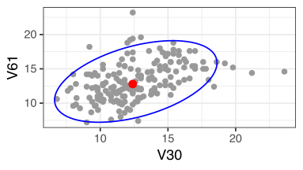
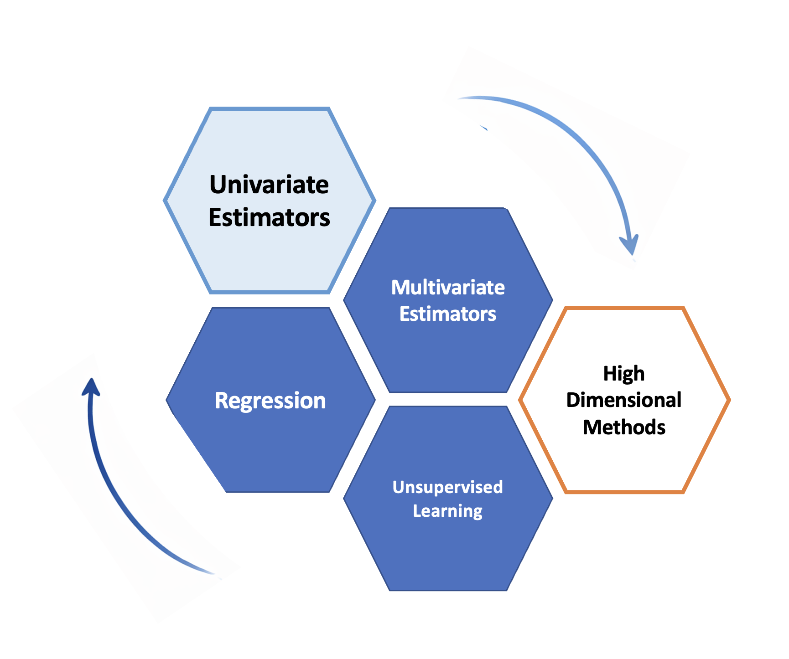
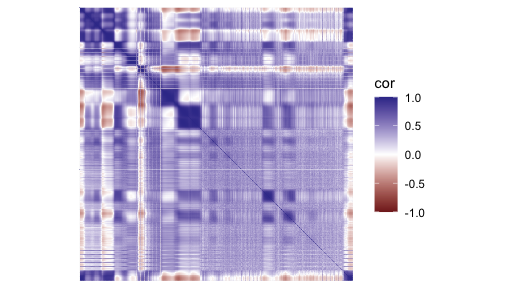
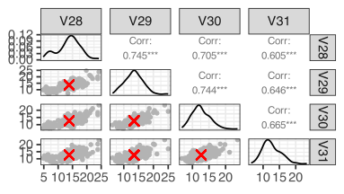
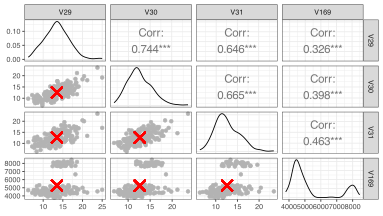
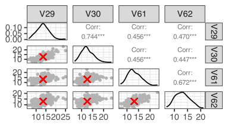
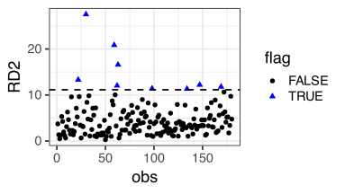
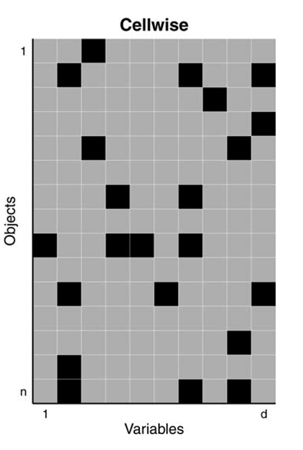
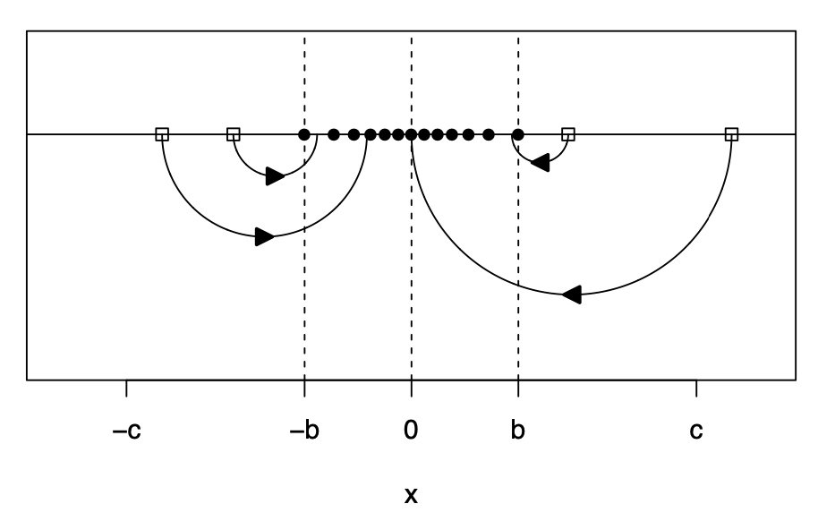
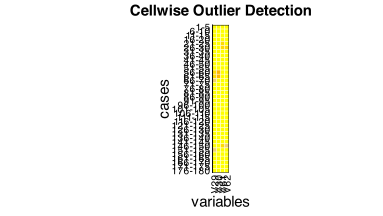

Attribution
Some examples and references are from Challenges of cellwise outliers, by Raymaekers and Rousseeuw
Robust Statistics, by Maronna, Martin, Yohai, Salibian-Barrera
In memory of my mentor and friend
Professor Ruben Zamar (1949-2023)
who contributed greatly to Robust Statistics and beyond …
Review
An outlier is an observation that deviates from the bulk of the data, an atypical observation.
We defined both casewise and cellwise outliers but focused on univarite outliers.
 We defined and examined by simulations three univariate estimators of location: the mean, the median, the M-estimators.
We defined and examined by simulations three univariate estimators of location: the mean, the median, the M-estimators.
- We learned about the trade-off between robustness and efficiency.
Definition: Efficiency
Efficiency measures how precise an estimator is, the more efficient the estimator, the less it varies across samples.
Relative efficiency compares two unbiased estimators by the ratio of their variances.
Since the sample mean is an optimal estimator (MLE) under the Normal distribution, we measured the efficiency of robust estimators in comparison to the sample mean, for example:
\[\frac{\text{Var}(\text{sample median})}{\text{Var}(\text{sample mean})}\]

From one variable to an entire dataset

Three core tasks:
Estimating multivariate paramters (e.g, location and covariance)
Modeling relationships (e.g., regression)
Discovering structure (e.g., unsupervised learning)
Goal for today
- What is a multivariate parameter?
- How do we estimate multivariate location and scatter robustly?
- How do we detect multivariate outliers?
- Why do cellwise outliers need different tools?
From one variable to many variables
For one variable, typical parameters are:
- center: mean, median
- spread: variance, SD, MAD
With several variables, we also estimate:
multivariate center: e.g., vector of means or medians
multivariate scatter: e.g., the sample covariance matrix
association: a matix of pairwise correlations
Correlation matrix

- Each entry measures pairwise linear association between variables
- Diagonal entries are 1
Multivariate estimators in R
Let’s start by visualizing pair-wise estimates for 4 variables

- Distribution of each variable in the diagonal
- Pairwise scatter plots and correlations off-diagonal
- Pairwise sample means shown as red crosses
Rowwise outliers

Outliers are visible in the (marginal) distribution of V169, so it is not surprising that they affect pairwise summaries too.
Multivariate outliers

Some observations deviate from the overall trend, while others reinforce it.
Robust multivariate estimators
M-estimators have also been proposed for the multivariate case.
Estimators based on the idea of trimming observations are also widely used, for example the Minimum Covariance Determinant (MCD).
Among many possible groups of \(h\) observations, choose the one that forms the tightest cluster of points
Compute the center and the spread using only that group
MCD tries to estimate the bulk of the data, rather than being influenced by extreme observations.
Detecting outliers
When looking at each variable at a time, we used the 3-\(\sigma\) rule:
\[ |z_i| = \left|\frac{x_i - \hat{\mu}}{\hat{\sigma}}\right| > 3 \]
With several variables, the analogue is the Mahalanobis distance:
\[ MD(\mathbf{x}_i) = \sqrt{(\mathbf{x}_i - \hat{\mathbf{\mu}})^T \hat{\Sigma}^{-1} (\mathbf{x}_i - \hat{\mu})} > \text{cut-off} \]
It measures the distance of each point \(\mathbf{x}_i\) to the center \(\hat{\mathbf{\mu}}\), taking the correlation between variables into account.
Using robust estimates \(\hat{\mu}\) and \(\hat{\Sigma}\), we can control masking and define a score to detect outliers.
recall replacing mean/SD by median/MAD in the univariate case

Points (rows) with a squared MD exceeding the cutoff are flagged as rowwise outliers
Other estimators
V29 V30 V61 V62
V29 8.971398 5.684242 3.804613 3.808414
V30 5.684242 7.089589 3.545454 3.312801
V61 3.804613 3.545454 7.475114 4.837979
V62 3.808414 3.312801 4.837979 7.359527[1] 3.3765584 1.2505738 0.5629201 1.2960335 4.6633382 4.3703017| V29 | V30 | V61 | V62 | |
|---|---|---|---|---|
| Mean | 13.486 | 12.624 | 13.160 | 13.029 |
| Median | 13.600 | 12.325 | 12.600 | 13.000 |
| MCD | 13.341 | 12.598 | 12.874 | 12.795 |
| MM | 13.340 | 12.508 | 13.072 | 12.951 |
Cellwise outliers
But what if only a few cells are contaminated in many rows?
- every row may contain at least one bad entry
- rowwise methods can lose too much information
- we need methods that work more coordinatewise
This motivates wrapping and DDC.

DDC: Detect Deviating Cells
DDC is aimed at cellwise outliers.
- use the relationships among variables
- predict what a cell should look like from the others
- flag cells that deviate strongly from that prediction
DDC looks for suspicious entries, not just suspicious rows.
DDC uses robust correlations to describe relationships among variables
DDC can also detect missing or implausible values
flagged cells can be imputed using predictions from other variables
In high-dimensional data, contamination often occurs cell by cell, not row by row.
Robust correlation by wrapping
In the spirit of Huber’s estimation, wrapping have been proposed to compute robust correlations (fast):
- robustly standardize each variable
- transform extreme values with a bounded function
- compute ordinary correlations on the transformed data

So we keep the speed and matrix structure of classical correlation, but gain robustness.
from Raymaekers, J., and Rousseeuw, P.J, (Technometrics 2021)
#uses wrapping to estimate correlations
fastDDCpars=list(fastDDC=T,silent=F)
#computes DDC algorithm
fastDDCglass = DDC(X,fastDDCpars)
The input data has 180 rows and 4 columns.[1] 180 4nrowsinblock <- 5
ggpfastDDC <- cellMap(
D = glass_clean,
R = fastDDCglass$stdResid,
indcells = fastDDCglass$indcells,
indrows = fastDDCglass$indrows,
mTitle = "Cellwise Outlier Detection",
nrowsinblock = nrowsinblock,
columnangle = 90,
sizetitles = 1.5,
autolabel = FALSE
)No rowblocklabels were given, so they are constructed automatically.
Key Takeaways
In both univariate and multivariate cases, classical estimators are highly sensitive to outliers
Robust estimators reduce the influence of extreme observations
Rowwise contamination
Methods such as M-estimators and MCD estimate robust multivariate center and scatter
These estimates can be used to compute robust Mahalanobis distances to detect outliers
Cellwise contamination
- Methods such as DDC and wrapping detect corrupted cells
- They rely on relationships among variables and are used to compute robust multivariate estimates and flag outliers
Robust methods improve both estimation and outlier detection
Beyond Multivariate estimation
- Similar ideas have been used to propose robust regression methods
- e.g., minimizing a robust function of the residuals instead of the sum of squares
- Multivariate estimators are essential in unsupervised methods
- e.g., principal component analysis (PCA)
UBC DSCI 200